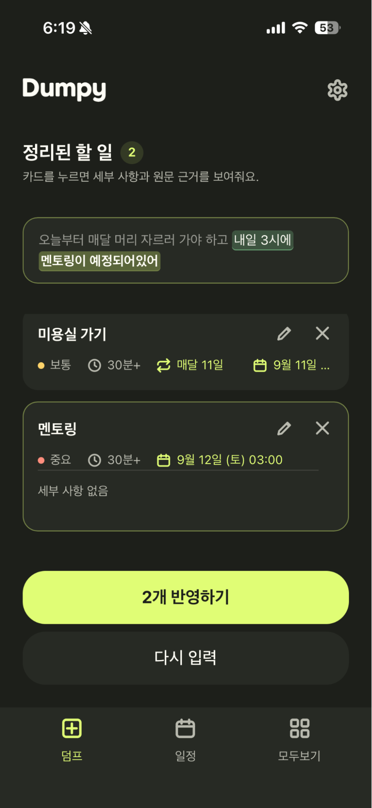
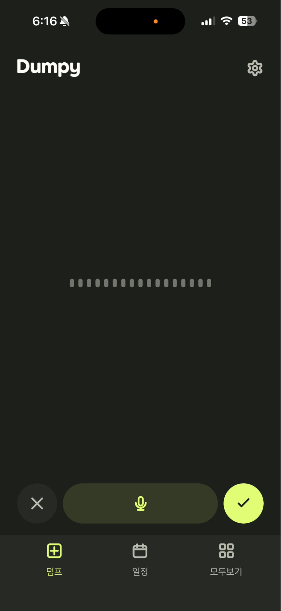
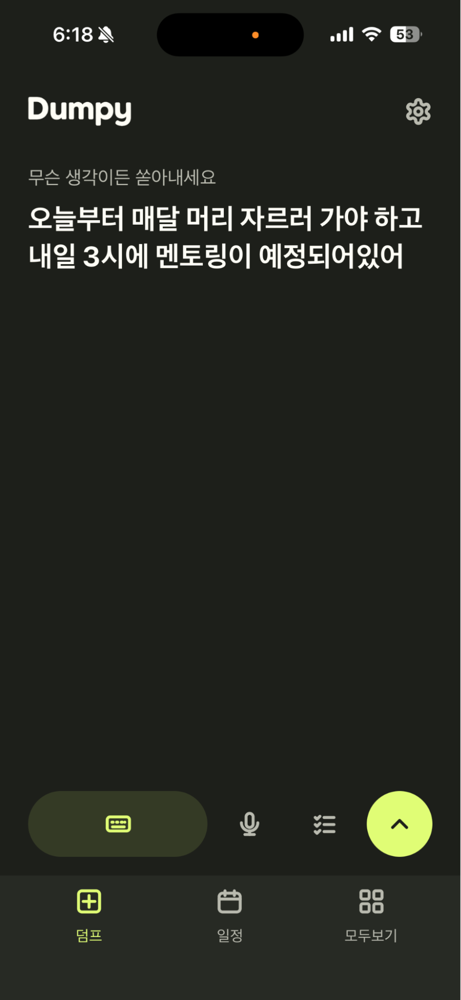

생각을 던지면 AI가 정리하는 ADHD 데일리 플래너

우리가락마구니사냥꾼 김서영 · 박도현 · 조현석
정리와 완벽을 요구하지 않습니다.
생각나는 대로, 그냥 쏟아내세요
기억하고, 정리하고, 다시 알려주는건 Dumpy가 할게요.
언제 어디서든, 쉽고 빠르게텍스트와 음성 중 원하는 방식으로 입력


내일 3시에 팀 회의하고 발표 초안 만들어서금요일까지 보내기로 했어. 아 맞다 구독한거해지도 해야하는데?
내일 · 오후 3시 · 알림 설정됨
2일 남음 · 알림 설정됨
날짜 미지정
시간 버킷별로 나누어 일정을 확인하고Drag and Drop으로 쉽게 옮길 수 있습니다.
먼저 할 일을 고를 기준
작업에 걸릴 시간을 가늠
기록 속 날짜를 일정으로
원문을 통해 내가 남긴 의도를 보존하고,근거가 되는 부분을 하이라이트로 확인할 수 있습니다.
이 일정이 어디서 나왔는지, 원문으로 확인
오늘부터 매달 머리 자르러 가야 하고 내일 3시에 센터에서 Space A3였나? 멘토링이 있어
5,900원/9,900원
예시 · 실제 절감액·사례는 사용자 조사 후 반영
유료 1명 + 무료 9명 가정
월 5,900원
월 9,900원
STEP 1
설치 최적화
STEP 2
Activation / Conversion 검증
STEP 3
구매·구독 최적화